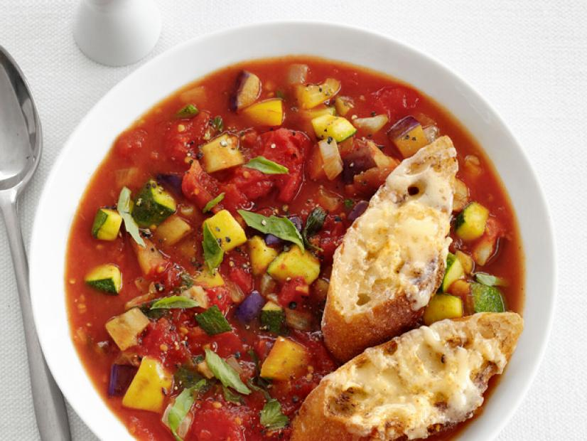

Ratatouille Soup

Ingredients
- 3 tablespoons extra-virgin olive oil, plus more for brushing
- 1 large onion, diced
- 4 cloves garlic, smashed
- 3 to 4 teaspoons mixed herbs
- Salt
- 1 small Japanese eggplant, diced
- 1 small zucchini, diced
- 1 yellow bell pepper, diced
- 1 28-ounce can whole San Marzano tomatoes, crushed
- 2 cups low-sodium chicken or vegetable broth
- Large handful of fresh basil leaves, torn
- 8 thick slices baguette
- 1 cup coarsely grated gruyere or Swiss cheese
- Freshly ground pepper
Preparation Time
40 mins
Instructions
-
Heat the olive oil in a large pot over medium-high heat. Add the onion
and garlic and cook until soft, about 3 minutes.
-
Add 1 to 2 teaspoons herbes de Provence and 1 teaspoon salt. Add the
eggplant, zucchini and bell pepper and cook, stirring, 5 minutes.
-
Add the tomatoes and their juices, the broth and half of the basil.
Bring to a boil, then reduce the heat and simmer 20 minutes.
-
Preheat the broiler. Brush the bread with olive oil; sprinkle with the
remaining 2 teaspoons of mixed herbs and salt to taste. Broil until
lightly toasted. Top with the cheese, then broil until melted.
-
Puree about half of the soup in a blender, then return to the pot.
Season with salt and pepper. Ladle the soup into bowls and top with the
cheese toasts and the remaining basil.